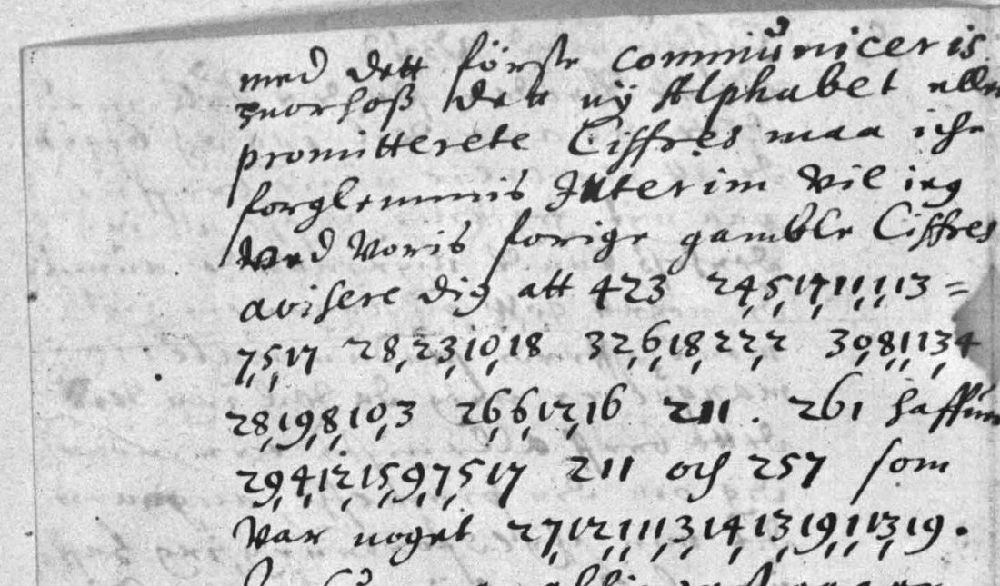
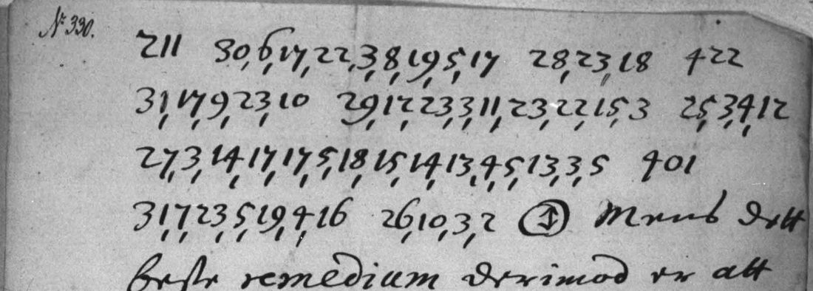

At a glanceKey from adjacent plaintext · partial (67% of the cipher)
- The letters
- Peder Vibe in Copenhagen to Peder Juel, Danish resident in Stockholm, 11 January 1649 to 20 September 1651: ten letters or pages in Danish with passages, and two whole leaves, in a number cipher.
- A text of 1648
- Beyond the ten letters, the entry to Vibe of 2 September 1648 in the register of Juel’s outgoing letters (unit 261585, p. 115) is in the same cipher: ten lines of numbers, read in part with the rule unchanged (21 certain words of 25, nine code numbers open). It is counted apart: the figures on this page are those of the ten letters.
- Where
- Rigsarkivet, Copenhagen, TKUA, Speciel del, Sverige: Resident Peder Juels og Mogens Høegs gesandtskabsarkiver, Ordrer og breve 1648–55; Arkivalieronline unit 261583, images 62–74. Not on DECODE.
- The cipher
- Each cipher word begins with an opener (24–39) that sets a shift; the other numbers are letters of a 23-letter alphabet, shifted and wrapping round. Two- and three-digit code numbers stand between the words, by the sense for people and places.
- How the key was found
- The shift-per-word system came from a letter of the same file in Vibe’s other cipher, which someone at the time had partly deciphered between the lines. The old cipher’s own alphabet and rule were then worked out on these letters, which have no gloss.
- The test
- The one pre-registered test that included a letter in this cipher failed (margin 0.21, bar 0.30). The rule of this cipher was found afterwards and never had a pre-registered test.
- What it says
- Court news of 1649–1651: who has the ear of #211, discontent over the revenues, a quarrel over an arrest and an alleged murder plot. Who does what is mostly behind the codes.
- Credit
- Transcription, key, tests and reading of the ten letters by Brice Dudout and his AI agents (pull request #410); transcription and reading of the register p. 115 by WAINUT (a Dutch AI company) with AI language-model agents (pull request #457). The lead and the pointer to the glossed letter came from the project’s Rigsarkivet sweep.
- Still open
- All 68 code tokens (22 numbers); five cipher words; 32 words are only probable. No human has read the text.
01 The letters
Peder Vibe wrote from Copenhagen to Peder Juel, the Danish resident in Stockholm. His letters lie in the resident’s embassy archive at the Rigsarkivet, numbered in an old hand, and most of them carry a few lines of numbers between the clear Danish. Two leaves are almost wholly in numbers. None of the letters on this page has a decipherment written on it.
On 11 January 1649 Vibe says in clear which cipher he is using. The new alphabet (“dett ny Alphabet”) is to be sent with the first occasion, and meanwhile he writes “wed woris forige gamble Ciffres”, with our former old cipher. The cipher lines follow at once:

This page covers the letters in that old cipher: image 62 (11 January 1649), 63 (early 1649), 64 (22 February 1649), 67 (25 April 1649), 68 (April 1650), 69 (18 April 1650), 70 (23 May 1650), 71 (a leaf wholly in cipher, received in Stockholm on 6 June 1650), 72 and 73 (a slip wholly in cipher, perhaps of July 1651) and 74 (20 September 1651). The letters of 1651 to 1655 in the same file are in a different cipher, with its own page: Vibe to Juel, the new alphabet.
One more text is in this cipher and is read in section 04: p. 115 of the extract register of Juel’s own outgoing letters (Arkivalieronline unit 261585, image 61), where the secretary copied the secret passage of Juel’s letter to Vibe of 2 September 1648 as ten lines of numbers between clear words. It came with the pull request of WAINUT on the register (#457), whose own table, the 8-64 numbers of the entries to the chancellor, is a different cipher with its own page.
02 The cipher
A cipher word is an opener followed by a body. The opener is a number from 24 to 39 and fixes a shift k. Each number of the body is then the rank of a letter plus k.
- The alphabet has 23 letters: a b c d e f g h i k l m n o p q r s t u x y z (i also for j, u also for v and w).
- The shift is k = −(opener mod 3): openers 24, 27, 30, 33, 36, 39 give 0; 25, 28, 31, 34, 37 give −1; 26, 29, 32, 35, 38 give −2.
- The alphabet wraps round (mod 23): with a shift of −1 the letter a is written 23.
- In the body 32, 33 and 34 stand for 1, 2 and 3.
The first line of the letter of 20 September 1651 shows it. In 30.6.17.22.3.8.19.5.17 the opener 30 gives a shift of 0, and the body reads f r y c h t e r. In 28.23.18 the opener 28 gives −1, so 23 is a and 18 is t: “frychter at”, fears that.

Between the cipher words stand two- and three-digit numbers, a nomenclator: 68 of them in these letters, 22 different numbers. 211 comes sixteen times, 422 and 228 eight times each, 257 seven times. None has a value. None of the 22 occurs in the letters in the new alphabet.
The key is key.tsv in the repository folder, released by the contributor under CC BY 4.0. A short script decodes the transcription with this one fixed rule and no language model.
03 The tests, and one that failed
Brice Dudout’s agents found the shift-per-word system on a letter in the new alphabet, N. 319, where someone at the time had written letters over about a third of the words. They then wrote down a test and hashed it before opening the letters it would be run on. (The order of events is by the contributor’s record: the pull request is a single commit and the timestamps are his own.)
Test 1 failed. It declared that one opener table, that of N. 319, held for the whole file. The held-out set was three letters never opened: image 74 (N. 330), image 77 and image 79 right, 54 words and 335 numbers. The score was the mean log-probability per character of the decode under a model of old Danish. The decode scored −3.068; the best of 600 controls scored −3.281. The margin was 0.21 and the bar set in advance was 0.30. The set was not measured again.
The cause was found afterwards: N. 330 is in the old cipher, which that table cannot read. The rule given in section 02 was then worked out on N. 330 itself, a letter already measured and opened, and applied to the letters of 1649 and 1650. So the rule of the old cipher never had a pre-registered test. A second test was run with a changed rule, and passed, but its held-out letters are all in the new alphabet; it is described on that page and supports only the system the two ciphers share.
What else makes the rule credible:
- Vibe says in clear that he is writing in the old cipher (image 62).
- One fixed rule turns the numbers of all ten letters or pages into Danish words that fit the clear text around them: 244 of 250 cipher words.
- When the pull request was verified, the three letters of test 1 were scored one by one with the table of that test. Image 74 scored −3.980 against a best control of −3.125, worse than chance; the two new-alphabet letters scored above their controls. One letter sank the set, and it is the old-cipher one.
- Also at verification, the fixed old-cipher rule was scored against 200 random opener tables on the final transcription: −1.926 against a best of −2.536. And a refit of the shift for each opener, letter by letter, over both ciphers agreed with the fixed tables for 383 of 403 words (as counted at verification).
A later text bears on the rule without being a test. Page 115 of Juel’s register (2 September 1648, to Vibe) was read by WAINUT with this rule unchanged, after the rule was published: 21 certain words of 25 give Danish, and three of its nine code numbers (212, 351, 401) are also among the 22 of the letters of 1649–1651. It was not pre-registered, so it does not turn the rule into a tested one, but it is an application to a text the rule was not built on, in a secretary’s hand, and it puts the cipher in use in 1648, before the letter that names it.
These last checks were made after the fact, on letters already read. They are controls, not a blind test. The verification also compared about 110 numbers of image 74 and the five cipher lines of image 62 with the images, and all agreed.
04 What the letters say
The cipher words give Danish that reads with the clear text. But the subject or object of most sentences is a code number, so the reading tells what was done and seldom who did it. In the quotations, capitals are cipher words, {braces} mark a probable word, and #211 is a code number.
11 January 1649. “… aduisere dig att #423 ERLANGER ALT HUAD HAND UILD HOS #211. #261 haffuer FORLIGT #211 och #257, som war noget {MALCONTANT}.” #423 obtains everything he wants from #211; #261 has reconciled #211 and #257, who was somewhat discontented.
Early 1649. #422 and #261 are studying which of them can best win #211. #422 will not travel to #46 before #261 is in #44.
22 February 1649. “{BAA[D]SFOLKET} och en HUER MAND ER {MALCONTANT}”: the sailors and every man are discontented. The Marselis, Friedrich Möller and others have obtained assignments on the best revenues of the realm, “saa att i dette aar RESTERER NEPPELIG SAA MØGET som BEHØFUIS TIL #211 HOFHALTUNG”, so that this year hardly as much is left as the household of #211 needs. He has come home from Norway with six thousand rixdollars from the tolls.
April 1650. The High Steward does not go out because of his weakness, “SOM HAND {FORREGIFFER}; DEN {RETTE} AARSAG ER AT #257 ER {MALCONTANT}”: as he pretends; the true reason is that #257 is discontented. A great new ship is valued at 63,000 rixdollars.
18 April and 23 May 1650. Nobody would press a cause against #211 in earnest: “Men naar dett skulle GIELDE, UAR INGEN HIEMME”, but when it mattered, nobody was at home. #261 is somewhat perplexed in his affairs because of what happened with #422.
The leaf received on 6 June 1650. #228 has asked, through two noblemen, for satisfaction for the arrest #257 has been under. #211 has asked #228 for a declaration “OM DET MORD #211 TIENERE SKULLE UILLE GIØRE PAA #257”, about the murder that servants of #211 were said to intend on #257. #228 has written a courteous letter, but #211 is not satisfied. The account of the Norwegian fleet has been examined, and #233 came off very badly.
The slip (July 1651?). “UDI DAG ER #236 AF #354 FORSAMLET AT {DØMME} PAA #422”: today #236 is assembled to judge #422. Two letters are to be enquired into so as to take a sure counsel against it. “Sapienti sat.”
20 September 1651 (N. 330). “#211 FRYCHTER AT #422 SKAL OBENBARE DEN CORRESPONDENCE #401 HAFUER MED” a circled sign. #211 fears that #422 will reveal the correspondence that #401 has with someone marked only by that sign. The best remedy is to make everyone believe that #257 is used to feigning such things. Vibe asks for Juel’s opinion on the means “AT GEUINDE #370 och SEPARERE HAM FRA #422”, to win #370 and separate him from #422.
2 September 1648, Juel to Vibe (register p. 115). “#442 SAGDE NOGLE DAGE TIL #212 AT FORRIGE #412 AF #351 #277 [FOGTE] HENDE BORT, NU SKAL #401 FOERE HENDE HID IGIEN”: #442 said some days ago to #212 that the former #412 of #351 #277 […] her away, and that #401 shall now bring her back here again. Then, with the clear words of the register between the runs, “BLEF HAND {DRAGIT}” (he was drawn…), and that #412 of #339 and #412 of #426 drove with three wagons between. Nine code numbers stand for the people; none is identified. Of its 25 cipher words 21 are certain (84.0%), two more (bort, skal) rest on digits that a blind reader settled as 18 and 8 where both passes had 14 and 4 (the integration’s own look at the image did not settle them), one is a guess and one (fogte) is a hole; with the 15 code tokens as holes, 21 of 40 (52.5%). The contributor counted 23 of 25 (92.0%). The clear Danish of the register is not transcribed.
The contributor notes two guesses that the sense invites, 211 for the king and 257 for the High Steward. No key supports them and they are not part of the reading.
05 What remains open
The count uses one rule. A cipher word counts when every number is legible and the word is Danish (certain, 212) or when the word needed a corrected number, a re-divided tick, a supplied letter or an unusual spelling, each with its reason in the reading file (probable, 32). A word supplied from the sense (1) or unresolved (5) is a hole, and so is every code number (68).
- Cipher words given a value: 244 of 250, 97.6%.
- Read share with every code as a hole: 212 of 318, 66.7% (certain words only; probable, restored and unresolved words and every code are holes). With the 32 probable words it is 244 of 318, 76.7%. That is under the 95% bar, so the text is deciphered in part. The pull request gave one figure for both of Vibe’s ciphers together, 71.8%.
- Two letters are under 95% on cipher words alone: 22 February 1649 (28 of 30) and 18 April 1650 (23 of 25).
Open pieces:
- The 68 code tokens, 22 numbers. No code list is in the file and no letter in this cipher has a gloss. Juel’s replies, the rest of NKS 1299 e at the Royal Library, or a code list in the Juel papers could give them.
- Five unresolved cipher words: image 64,
24.1=7.5(“age”, perhaps a name); image 69,30.13.1.11.14and27.8.9.12; image 71,31.?9.5.17.4.12.18(first number under a blot); image 72,32.9.3.6.11(“lehn”, read clearly, sense not established). - The 32 probable words. Each rests on a corrected number, a re-divided tick, a supplied letter or an unusual spelling, listed with its reason in the reading file. Only one was compared with the image by a second reader, the last word of image 62, at integration (the verification confirmed one corrected number on image 74, in a word counted certain; none of the probable words was checked there). The pull request had left that word unresolved as
27.12.11.13.14.13.19.13.19; on the image the same digits divide as27.12.1.11.3.14.13.19.1.13.19, which is “malcontant”, the word and spelling of two later letters. - No pre-registered test of the rule (section 03). Every letter of the file in this cipher is now opened; page 115 of Juel’s register (section 04) was read with the rule unchanged but not as a pre-registered test. Its own pieces are open: fogte and [dragit], nine code numbers (six of them not among the 22 above), and the clear text of the register between the runs, which is not transcribed (secretary hand on microfilm).
- Prior art. The catalogue vetting found nothing on DECODE, at Cryptiana or in George Lasry’s lists, and the contributor found no edition of the cipher passages. Neither search was repeated when the pull request was verified, and the Royal Library and the Danish printed collections were not searched at length.
- All readers so far were AI agents working from the microfilm scans online. No person has checked a passage against the image.
Full texts
The transcription and the decryption of every document on this page, so that the reading can be used and checked. Short files are shown here; all are in the repository.
Peder Vibe to Peder Juel, 1649-1651, cipher passages in the old cipher of 10 letters or pages read in part
News of the Danish court from Copenhagen, January 1649 to September 1651: who obtains what from #211 and who is reconciled with whom; sailors and every man discontented while the Marselis and Friedrich Möller hold assignments on the best revenues of the realm; the High Steward kept at home by a pretended weakness; #228 asking satisfaction for an arrest and #211 a declaration about an alleged murder plot; the account of the Norwegian fleet; #422 to be judged; how to win #370 away from #422. The 22 code numbers that name the actors are not identified.
Builds coherent sentences, but under the read bar of 95% of words read as sense (67% here); the holes are marked in the reading.
Transcription
# vibejuel1649 - transcription of the cipher passages of the letters of Peder Vibe to Peder Juel (Danish resident in Stockholm)
# in the OLD cipher ("gamle Ciffres"), 11 Jan 1649 to 20 Sep 1651 (Rigsarkivet, TKUA, Speciel del, Sverige, Resident Peder Juels og
# Mogens Hoegs gesandtskabsarkiver, Ordrer og breve 1648-55; Arkivalieronline unit 261583, images 62-74). Part of catalogue 2527.
# Conventions: the numbers of one cipher word are joined by "." (the scribe marks them off with small ticks below the line);
# "=" at the end of a token = the word goes on after a line break or with a new opener; C<n> = nomenclator code (3 or 4 digits,
# sometimes 2); [ ... ] = clear text of the letter between the cipher words, abridged where marked "..." (notes in it are
# in English: struck out, blot, tear, hole in the paper); "!" = doubtful word.
# "#A" and "#K" lines give the alphabet and opener table used by scripts/decode.py (see key.tsv). "#S" starts a letter or page.
# Transcribed from the Arkivalieronline images by the contributor's agents (Brice Dudout, 11 Nov 2026), number by number; re-read
# at native zoom after the measurements. The version-0 transcriptions of the two held-out sets, frozen before any decryption, are in
# targets/vibejuel1651/frozen/working/transcr/ with their hashes in targets/vibejuel1651/frozen/protocole/.
# Split by key on 12 Nov 2026 (one key, one entry): the letters in the new alphabet (1651-1655) are in targets/vibejuel1651/.
# Integration fix (12 Nov 2026): image 62, last cipher word re-divided on the image as 27.12.1.11.3.14.13.19.1.13.19 (malcontant,
# the word and spelling of images 64 and 68); the contributor had 27.12.11.13.14.13.19.13.19, unresolved.
# Credit: Rigsarkivet, Arkivalieronline.
#S image 62: end of N. 325 ('n° 1'), Vibe to Juel, Copenhagen 11 Jan 1649 - gamle Ciffres
#A A23x
#K {24:0,25:-1,26:-2,27:0,28:-1,29:-2,30:0,31:-1,32:-2,33:0,34:-1,35:-2,36:0,37:-1,38:-2,39:0}
[med dett første communiceris derhoss dett ny Alphabet aller promitterede Ciffres men ...forglemmis. Interim will ieg wed woris forige gamble Ciffres aduisere dig att] C423 24.5.17.11.1.13=
7.5.17 28.23.10.18 32.6.18.22.2 30.8.1.13.4
28.19.8.10.3 26.6.12.16 C211 [.] C261 [haffuer]
29.4.12.15.9.7.5.17 C211 [och] C257 [som]
[war noget] !27.12.1.11.3.14.13.19.1.13.19 [. In summa altingest gaar paa den gammel manier ...]
#S image 63 right: N. 298 ('n° 5'), Vibe to Juel, [Copenhagen] early 1649 - gamle Ciffres
#A A23x
#K {24:0,25:-1,26:-2,27:0,28:-1,29:-2,30:0,31:-1,32:-2,33:0,34:-1,35:-2,36:0,37:-1,38:-2,39:0}
[Wi acht och mig med dett første tilschickit.] C422 [och] C261 [studerer paa huem] 24.1.6 28.3.4.11
26.8.22.11.2 30.2.5.18.19 29.5.3.18.7.11.2.3 C211 C423
25.10.23.23 [nogle] 32.2.22.5.3 27.20.4.9 C35 [Wdi den]
[intention att] C228 [skulle tage] 29.16.7.11 28.23.1=
17.4.3 27.8.14.18 C211 [och siden willer hand were den] 30.18.9.18.19.5 31.7.13.17 C211 [Mens] C422
[willer icke] 24.17.5.9.18.5 25.18.8.10 C46 [førren]
C261 [war] 26.18.2.7 C44 [. Dagligen ...]
#S image 64 right: 'N 8', N. 328/329, Vibe to Juel, Copenhagen 22 Feb 1649 (date on image 65 left) - gamle Ciffres
#A A23x
#K {24:0,25:-1,26:-2,27:0,28:-1,29:-2,30:0,31:-1,32:-2,33:0,34:-1,35:-2,36:0,37:-1,38:-2,39:0}
[... Interim er] 24.1=
7.5 25.7.4.4.10 26.13.3.15.13.9.3.19 27.4.5.17.14.6.20 [hole in the paper]
[thi] 31.1.23.23.17.5.13.10.9.4.18 [och en] 29.6.18.3.15
30.12.1.13.4 31.4.16 27.12.1.11.3.14.13.19.1.13.19 [andre]
[di marseils, Friedrich Möller och nogle andre saa som haffuer] 32.4.22.22.3.17 31.8.12.3=
19.8.17.19.12.6.4.16 [paa di] 30.2.5.18.19.5 28.16.8.6.4.17
25.8.12.18.16.23.3.4.16 [saa att] [struck out] [i dette a(ar)]
26.15.3.16.17.3.15.3.15 27.13.5.15.15.5.11.9.7 28.17.23.23
29.10.12.5.3.17 [som] 30.2.5.8.14.6.20.9.18 31.18.8.10
C211 32.6.12.4.6.22.9.17.18.11.5 [. hand er kommet hiemb fra Norige förer med]
[sig] 28.17.4.20 28.18.19.17.4.12.3 29.15.7.19 32.2.22.9.3 [edge: …]
31.23.5 29.22.9.9.3 30.19.14.11.11.5 25.19.3.8 C363 [och dog]
[er derriblant nogle aff] C109 [tear] 25.2=
6.8.5.18 [. Rigens Hoffmester er wist den 15 febr. fra Colding. Mig er sagt att Kongen haffuer schreffuit effter Rigens Marsk. …]
#S image 67 left: continuation of 'N 21', N. 324, Vibe to Juel, Copenhagen 25 Apr 1649 - gamle Ciffres
#A A23x
#K {24:0,25:-1,26:-2,27:0,28:-1,29:-2,30:0,31:-1,32:-2,33:0,34:-1,35:-2,36:0,37:-1,38:-2,39:0}
[Jeg erfahrer aff andre deris breffuer fra] C235 [schreffuit att hand er icke well til freds med dennem som approcherer] C211 [formedelst att hannem skeer undertiden nogen liden indpass]
[wed] C211 24.2.17.5.6.20.5 25.19.3.8
26.6.22.11.2.16 30.7.14.20.20.5.17.13.14 31.8
C363 [. huorom wider udan tuiffuel wil wi komme tilsammen. Lad mig wide naar du reiser fra Stocholm til att rette mig …]
#S image 68 right: 'N 28', N. 327, Vibe to Juel, April 1650 (marginal note '1650 18/4') - gamle Ciffres
#A A23x
#K {24:0,25:-1,26:-2,27:0,28:-1,29:-2,30:0,31:-1,32:-2,33:0,34:-1,35:-2,36:0,37:-1,38:-2,39:0}
[Kiere Peder Juel och kiere broder, din skriffuelse N 23 haffuer jeg well bekommit, takker dig for dit gode offre. Der er inted synderlig nyt paa. K. M. er forreist til Frederiksborg. S. Christian Rantzow reiser did i dag och derfra ad Holstein. S. Hannibal Sehested er hid forventendis om tre dagge. S. Rigens Hoffmester kommer intet ud for sin suaghed skyld]
24.18.14.12 25.7.23.12.3 26.3.12.15.15.3=
26.5.7.4.4.3.15 27.4.5.13 28.16.4.18.18.5
29.22.22.15.16.22.5 30.5.17 31.23.18 C257
32.3.15 27.12.1.11.3.14.13.19.1.13.19 28.5.13.16
29.22.17 [Albert Baltzer(?). Det store nybygte skib er taxeret paa 63000 Rd och] C422
24.8.1.6.20.5.17 25.10.13.5.19.4.18 26.6.22.10
[95000 :] C257 24.8.1.6.4.5 [och …]
#S image 69 left: end of a letter of Vibe, Copenhagen 18 Apr 1650 - gamle Ciffres
#A A23x
#K {24:0,25:-1,26:-2,27:0,28:-1,29:-2,30:0,31:-1,32:-2,33:0,34:-1,35:-2,36:0,37:-1,38:-2,39:0}
25.11.4.4.12.18 27.1.19 C236 26.16.8.18.9.33
32.17.22.5.3.17 28.17.8.6 30.18.9.13 31.17.23.6
32.22.11 27.12.14.4 C211 [Men den tid di fornam att H paa den maniere som tilforn schriffuit er Da wille] 27.9.13.7.5.13 28.11.4.3
29.22.9.18.22.15 25.3.16.8.5.19.4 24.4.5.17
26.13.22.22 [Eller] 30.6.11.1.9.19.5.17.5.4.5
C228 !30.13.1.11.14 28.3.8 26.18.22.15.3
25.7.13.17 [cipher word struck out] !27.8.9.12 [Men naar dett skulle] 24.7.9.5.11.4.5
25.19.23.16 26.7.11.5.3.11 30.8.9.5.12.12.5
#S image 70 right: 'N 32', f. 328, Vibe to Juel, Copenhagen 23 May 1650 - gamle Ciffres
#A A23x
#K {24:0,25:-1,26:-2,27:0,28:-1,29:-2,30:0,31:-1,32:-2,33:0,34:-1,35:-2,36:0,37:-1,38:-2,39:0}
[Kiere Peder Jüll och Kiere Broder endoch att ieg nu med nogle poster ingen breffue haffuer bekommit fra dig saa wil ieg dog Continuere att schriffue och fornemblig lade dig wide att] C261 24.5.17 25.12.13.6.4.18 [cipher word struck out]
26.13.3.15.13.9.3.19 27.20.4.9 28.17.8.12.4
29.16.22.5.3.15 [formedelst dett som] 32.3.15
31.14.23.17.4.16.4.18 30.12.5.4 C422 [dog befinder ieg att] C423
29.15.3.1.12.9.9.7.5.3.15.3.15 28.17.8.6 [igen effter haanden saa att hand gaaer fast nock i sitt thrent saawit ieg kand dømme derom. Der dubiteris atter om]
24.17.1.19.9.6.9.3.1.19.9.14.13.5.13 25.14.23.23 26.22.1=
29.1.12.15.17.3.11 28.13.11 27.20.4.9 C35 [och saaledis bliffuer wi först om wed ...]
#S image 71 left: f. 317, page wholly in cipher, received in Stockholm 6 June 1650 - gamle Ciffres
#A A23x
#K {24:0,25:-1,26:-2,27:0,28:-1,29:-2,30:0,31:-1,32:-2,33:0,34:-1,35:-2,36:0,37:-1,38:-2,39:0}
C228 26.6.22.4.18.3.15 25.19.4.3 24.19.20.5.13=
4.5 27.8.5.17.17.5.12.5.13.4 28.1.4.6.8.4.16.4.18
29.16.22.17.7.16.4.22.1.17.7.12.11 32.4.12.15 31.3.4.12
30.1.17.5.18.19 C257 29.6.22.4.18.3.15.17 27.20.5=
17.5.19 30.9 C211 24.8.1.6.20.5.17 25.3.4.16=
8.11.13.3 32.18.3.2 28.18.13 C236 25.1.4.6.8.4.16.4.18
32.22.4 C228 24.5.17.10.11.5.17.20.13.7 31.13.11
29.2.3.17 30.12.14.17.4 C211 28.18.8.4.12.4.16.4
27.18.10.20.11.11.5 28.19.8.10.10.4 29.5.7.12.15.3
32.13.22.22 C257 C228 24.8.1.6.20.5.17
25.3.4.16.14.23.23 26.16.8.15.3.4.18.7.17 27.19.9.11
C211 28.8.18 29.6.12.4.9.7.5 30.2.17.5.6
28.11.4.12.17 C211 32.3.15 31.3.4.16.11.4.3
27.9.3.8.5 28.18.8.10 29.4.15.3.2.16 [In summa]
30.4.5.19.19.5 !31.19.5.17.4.12.18
32.10.3.9.9.3.10 C211 26.12.1.6 C228 30.18.5.5.17
31.19.8.18 32.18.2 24.4.5.19 25.16.4.6.4.12=
17.9.23.1 26.12.10 29.2.3.11 32.11.12.15.16.8.3
31.5.10.13.3.4 28.7.23.5.19.4.16 25.19.4.16.4.18
30.6.14.17 C236 27.8.20.14.17.20.4.9 C233
24.2.5.18.19.14.4 28.7.4.4.10 32.16.9.3.17 [Alias plura]
#S image 72 left: f. 318, slip wholly in cipher (with the letter of 10 July 1651?) - gamle Ciffres
#A A23x
#K {24:0,25:-1,26:-2,27:0,28:-1,29:-2,30:0,31:-1,32:-2,33:0,34:-1,35:-2,36:0,37:-1,38:-2,39:0}
32.18.2.7 28.3.23.6 24.5.17 C236 27.1.6
C354 25.5.13.16.17.23.11.10.4.18 29.22.17
30.4.14.22.12.5 28.14.23.23 C422
32.9.3.6.11 C401 26.6.22.4.18.3.15 29.18.3.9
32.22.17 25.6.8.5.18.4 28.8.3.4.18
31.4.23.23 C228 24.1.3.19.9.14.13.6.17
27.14.3.8 30.3.14.13.18.9.11.9.1 29.6.3.15
28.23.19.8.17.4.16.8.17 27.1.19 C257
26.6.22.4.18.3.15 25.17.2.7.16.4.5.19.8.18
C212 24.20.4.9 C301 28.18.8.10 32.4.12=
15.3.11 C422 26.2.15.12.5 28.23.5 C351
30.14.3.8 31.1.4.9.13.11.11.8.18 32.16.18.22.15
29.7.5.3.11 26.4.15.22 C420 [Derom]
#S image 73 left: f. 318 verso, continuation - gamle Ciffres
#A A23x
#K {24:0,25:-1,26:-2,27:0,28:-1,29:-2,30:0,31:-1,32:-2,33:0,34:-1,35:-2,36:0,37:-1,38:-2,39:0}
[Wil nøye och fliteligen inquireris att man kand erfahre]
30.3.14.13.19.5.13.19.1 27.1.6 24.2.5.7.7.5
25.1.16.4.5.19.4.12.4 28.18.8.10 31.23.18
26.4.22.17.17.3 29.7.17 32.18.7.16.17
24.3.14.13.18.9.11.9.20.12 25.3.4.16
26.7.10.12.2 [Sapienti sat. Tilliggit haffuer] C228 [schreffuit] C402 [til]
24.18.14.12 25.4.16 26.18.4.12.14.16.18.22.15= 9.7.5.17 C211 27.8.1.6.20.5.17
28.13.16.8.6.8.12.23.10.4.18
#S image 74: N. 330, Copenhagen 20 Sep 1651 (held-out set of test 1) - gamle Ciffres
#A A23x
#K {24:0,25:-1,26:-2,27:0,28:-1,29:-2,30:0,31:-1,32:-2,33:0,34:-1,35:-2,36:0,37:-1,38:-2,39:0}
C211 30.6.17.22.3.8.19.5.17 28.23.18 C422
31.17.9.23.10 29.12.23.3.11.23.22.15.3 25.3.4.12
27.3.14.17.17.5.18.15.14.13.4.5.13.3.5 C401
31.7.23.5.19.4.16 26.10.3.2 [circled sign] [Men dett beste remedium derimod er att indbilde alle att] C257 30.5.17
31.19.23.12.18 32.17.7.9 [att] 29.4.7.11.5.3.15.3
28.17.23.23.3.23.12.4 27.17.1.7.5.17 [effter min siste postscripti indhold som bleff i Tors-dag fremschicket med den ordinarie post. Lad mig wide din meening]
24.14.13 27.4.5.19 30.12.9.4.4.5.11
[struck out: 25.11.8] 25.9.23.12.3 29.4.7.11.2.7.16
30.1.19 28.6.4.19.8.12.3.4 C370 [och]
27.18.5.15.1.17.5.17.5 25.7.23.11 26.4.15.22
C422 [Dette saa i hast effter Kiø befaling Kiøbenhaffn 20 Septemb. 1651 Din trofaste Broder och tienner altid Peder Wibe]Decryption
# vibejuel1649 - raw decryption of transcription.txt, letter by letter (Vibe to Juel, old cipher, 1649-1651)
# Deterministic decode by scripts/decode.py with the fixed table of key.tsv (no language model, no correction):
# python3 scripts/decode.py transcription.txt
# CAPITALS = decoded cipher words; {n} = nomenclator code (not identified); [ ... ] = clear text of the letter; ?n = number out of the
# alphabet. Misread numbers are left as they come out; the reading by sense, with every correction justified, is reading.md.
== image 62: end of N. 325 ('n° 1'), Vibe to Juel, Copenhagen 11 Jan 1649 - gamle Ciffres
[med dett første communiceris derhoss dett ny Alphabet aller promitterede Ciffres men ...forglemmis. Interim will ieg wed woris forige gamble Ciffres aduisere dig att] {423}
ERLANGER ALT HUAD HAND
UILD HOS {211} [.] {261} [haffuer]
FORLIGT {211} [och] {257} [som]
[war noget] MALCONTANT [. In summa altingest gaar paa den gammel manier ...]
== image 63 right: N. 298 ('n° 5'), Vibe to Juel, [Copenhagen] early 1649 - gamle Ciffres
[Wi acht och mig med dett første tilschickit.] {422} [och] {261} [studerer paa huem] AF DEM
KAND BEST GEUINDE {211} {423}
LAA [nogle] DAGE UDI {35} [Wdi den]
[intention att] {228} [skulle tage] SIN
ABSED HOS {211} [och siden willer hand were den] SISTE HOS {211} [Mens] {422}
[willer icke] REISE TIL {46} [førren]
{261} [war] UDI {44} [. Dagligen ...]
== image 64 right: 'N 8', N. 328/329, Vibe to Juel, Copenhagen 22 Feb 1649 (date on image 65 left) - gamle Ciffres
[... Interim er]
AGE HEEL PERPLEX DEROFU [hole in the paper]
[thi] BAASFOLKET [och en] HUER
MAND ER MALCONTANT [andre]
[di marseils, Friedrich Möller och nogle andre saa som haffuer] FAAET
INDUISUNGER [paa di] BESTE RIGES
INTRADER [saa att] [struck out] [i dette a(ar)]
RESTERER NEPPELIG SAA
MOGET [som] BEHOFUIS TIL
{211} HOFHALTUNG [. hand er kommet hiemb fra Norige förer med]
[sig] SEX TUSEND RIX DALE [edge: …]
AF ALLE TOLLE UDI {363} [och dog]
[er derriblant nogle aff] {109} [tear]
CGIFT [. Rigens Hoffmester er wist den 15 febr. fra Colding. Mig er sagt att Kongen haffuer schreffuit effter Rigens Marsk. …]
== image 67 left: continuation of 'N 21', N. 324, Vibe to Juel, Copenhagen 25 Apr 1649 - gamle Ciffres
[Jeg erfahrer aff andre deris breffuer fra] {235} [schreffuit att hand er icke well til freds med dennem som approcherer] {211} [formedelst att hannem skeer undertiden nogen liden indpass]
[wed] {211} BREFUE UDI
HANDS GOUUERNO I
{363} [. huorom wider udan tuiffuel wil wi komme tilsammen. Lad mig wide naar du reiser fra Stocholm til att rette mig …]
== image 68 right: 'N 28', N. 327, Vibe to Juel, April 1650 (marginal note '1650 18/4') - gamle Ciffres
[Kiere Peder Juel och kiere broder, din skriffuelse N 23 haffuer jeg well bekommit, takker dig for dit gode offre. Der er inted synderlig nyt paa. K. M. er forreist til Frederiksborg. S. Christian Rantzow reiser did i dag och derfra ad Holstein. S. Hannibal Sehested er hid forventendis om tre dagge. S. Rigens Hoffmester kommer intet ud for sin suaghed skyld]
SOM HAND
EORREEGIFFER DEN RETTF
AARSAG ER AT {257}
ER MALCONTANT FOR
AT [Albert Baltzer(?). Det store nybygte skib er taxeret paa 63000 Rd och] {422}
HAFUER LOFUET HAM
[95000 :] {257} HAFDE [och …]
== image 69 left: end of a letter of Vibe, Copenhagen 18 Apr 1650 - gamle Ciffres
MEENT AT {236} SKULD
TAGET SIG SIN SAG
AN MOD {211} [Men den tid di fornam att H paa den maniere som tilforn schriffuit er Da wille] INGEN MED
ALUAR DRIFUE DER
PAA [Eller] FLAITEREDE
{228} NALO DI UARE
HOS [cipher word struck out] HIM [Men naar dett skulle] GIELDE
UAR INGEN HIEMME
== image 70 right: 'N 32', f. 328, Vibe to Juel, Copenhagen 23 May 1650 - gamle Ciffres
[Kiere Peder Jüll och Kiere Broder endoch att ieg nu med nogle poster ingen breffue haffuer bekommit fra dig saa wil ieg dog Continuere att schriffue och fornemblig lade dig wide att] {261} ER NOGET [cipher word struck out]
PERPLEX UDI SINE
SAGER [formedelst dett som] ER
PASERET MED {422} [dog befinder ieg att] {423}
RECOLLIGERER SIG [igen effter haanden saa att hand gaaer fast nock i sitt thrent saawit ieg kand dømme derom. Der dubiteris atter om]
RATIFICATIONEN PAA
ACHCORTEN OM UDI {35} [och saaledis bliffuer wi först om wed ...]
== image 71 left: f. 317, page wholly in cipher, received in Stockholm 6 June 1650 - gamle Ciffres
{228} HAFUER UED
TUENDE HERREMEND BEGIERET
SATISFACTION FOR DEN
AREST {257} HAFUERT
UERET I {211} HAFUER
DERIMOD UED TO {236} BEGIERET
AF {228} ERKLERUNG OM
DET MORD {211} TIENERE
SKULLE UILLE GIORE
PAA {257} {228} HAFUER
DERPAA SKREFUIT TIL
{211} IT HOFLIG BREF
MENS {211} ER DERMED
ICHE TIL FREDS [In summa]
DETTE UFSENT
MELLEM {211} OCH {228} SEER
UIT UD DET
REGENSKAB OM DEN NORSKE
FLODE HAFUER UERET
FOR {236} HUORUDI {233}
BESTOD HEEL SLET [Alias plura]
== image 72 left: f. 318, slip wholly in cipher (with the letter of 10 July 1651?) - gamle Ciffres
UDI DAG ER {236} AF
{354} FORSAMLET AT
DOYME PAA {422}
LEHN {401} HAFUER UEL
AT GIFTE IDET
EAA {228} ACTIONFR
OCH CONSILIA HER
AUISERIS AT {257}
HAFUER SCHREFUIT
{212} UDI {301} TIL
FOREN {422} DROG AF {351}
OCH BEKOMMIT SUAR
IGEN FRA {420} [Derom]
== image 73 left: f. 318 verso, continuation - gamle Ciffres
[Wil nøye och fliteligen inquireris att man kand erfahre]
CONTENTA AF BEGGE
BREFUENE TIL AT
FATTE IT UIST
CONSILIUM DER
IMOD [Sapienti sat. Tilliggit haffuer] {228} [schreffuit] {402} [til]
SOM ER UFOQSUARLIGT {211} HAFUER
ORIGINALET
== image 74: N. 330, Copenhagen 20 Sep 1651 (held-out set of test 1) - gamle Ciffres
{211} FRYCHTER AT {422}
SKAL OBENBARE DEN
CORRESPONDENCE {401}
HAFUER MED [circled sign] [Men dett beste remedium derimod er att indbilde alle att] {257} ER
UANT TIL [att] FINGERE
SAADANE RAGER [effter min siste postscripti indhold som bleff i Tors-dag fremschicket med den ordinarie post. Lad mig wide din meening]
ON DET MIDDEL
[struck out: 25.11.8] KAND FINDIS
AT GEUINDE {370} [och]
SEPARERE HAM FRA
{422} [Dette saa i hast effter Kiø befaling Kiøbenhaffn 20 Septemb. 1651 Din trofaste Broder och tienner altid Peder Wibe]Reading
# vibejuel1649 - reading of the cipher passages in the old cipher (Danish, spelling of the letters)
Letters of Peder Vibe to Peder Juel, 11 Jan 1649 to 20 Sep 1651, in the old cipher ("gamle Ciffres"; Arkivalieronline unit 261583,
images 62-74). Read by sense from `decryption.txt` with `key.tsv` (Brice Dudout's agents, PR #410). Image 74 (N. 330) was in the
held-out set of the failed test 1 and was re-read AFTER that measurement; nothing here was measured again (`validation.txt`). The
letters of 1651-1655 in the new alphabet are in `targets/vibejuel1651/reading.md`.
Marks: CAPITALS = cipher words, certain (every number read, the word is Danish of the time); {X} = probable (one number corrected
with a reason taken from the image, or an old spelling; see the list); [x] = restored (word supplied from the sense, not counted);
<...> = unresolved; #211 = nomenclator code, not identified; lower case = clear text of the letter, abridged with "...". Word
division and punctuation are the contributor's. Spelling of the time kept (u for v, w for v, ff, hafuer).
## Text
**Image 62, end of N. 325 ("n° 1"), Copenhagen 11 Jan 1649.** ... Interim will ieg wed woris forige gamble Ciffres aduisere dig att
#423 ERLANGER ALT HUAD HAND UILD HOS #211. #261 haffuer FORLIGT #211 och #257, som war noget {MALCONTANT}.
In summa altingest gaar paa den gammel manier ...
**Image 63 right, N. 298 ("n° 5"), early 1649.** #422 och #261 studerer paa huem AF DEM {KAND} BEST GEUINDE #211. #423 LAA nogle
DAGE UDI #35, wdi den intention att #228 skulle tage SIN {ABS[K]ED} HOS #211, och siden willer hand were den SISTE HOS #211. Mens
#422 willer icke REISE TIL #46, førren #261 war {UDI} #44.
**Image 64 right, "N 8", Copenhagen 22 Feb 1649.** ... Interim er <AGE> HEEL PERPLEX {DEROFU[ER]} [hole in the paper], thi
{BAA[D]SFOLKET} och en HUER MAND ER {MALCONTANT}. Andre, di Marseils, Friedrich Möller och nogle andre, saa som haffuer FAAET
{INDUISNINGER} paa di BESTE RIGES INTRADER, saa att i dette aar RESTERER NEPPELIG SAA MØGET som BEHØFUIS TIL #211 HOFHALTUNG. Hand
er kommet hiemb fra Norige, förer med sig SEX TUSEND RIX {DALE[R]} AF ALLE TOLLE UDI #363, och dog er derriblant nogle aff #109
[afgift] ... Rigens Hoffmester er wist den 15 febr. fra Colding ...
**Image 67 left, continuation of "N 21", Copenhagen 25 Apr 1649.** Jeg erfahrer aff andre deris breffuer fra #235 schreffuit att
hand er icke well til freds med dennem som approcherer #211, formedelst att hannem skeer undertiden nogen liden indpass wed #211
BREFUE UDI HANDS {GOUUERNO} {I} #363.
**Image 68 right, "N 28", April 1650.** ... S. Rigens Hoffmester kommer intet ud for sin suaghed skyld, SOM HAND {FORREGIFFER}; DEN
{RETTE} AARSAG ER AT #257 ER {MALCONTANT} FOR AT Albert Baltzer (?). Det store nybygte skib er taxeret paa 63000 Rd, och #422
HAFUER LOFUET HAM 95000; #257 HAFDE och ...
**Image 69 left, end of a letter, Copenhagen 18 Apr 1650.** ... MEENT AT #236 SKULD {TAGET} SIG SIN SAG AN MOD #211. Men den tid
di fornam att H paa den maniere som tilforn schriffuit er, da wille INGEN MED ALUAR DRIFUE DER {PAA}, eller {FLATTEREDE} #228
<30.13.1.11.14> DI UARE HOS [struck out] <27.8.9.12>. Men naar dett skulle GIELDE, UAR INGEN HIEMME.
**Image 70 right, "N 32", Copenhagen 23 May 1650.** ... lade dig wide att #261 ER NOGET [struck out] PERPLEX UDI SINE SAGER,
formedelst dett som ER PASERET MED #422. Dog befinder ieg att #423 {RECOLLIGERER} SIG igen effter haanden, saa att hand gaaer fast
nock i sitt thrent ... Der dubiteris atter om {RATIFICATIONEN} PAA {ACCORTEN} OM UDI #35, och saaledis bliffuer wi först om wed ...
**Image 71 left, f. 317, a page wholly in cipher, received 6 June 1650.** #228 HAFUER UED TUENDE HERREMEND BEGIERET {SATISFACTION}
FOR DEN AREST #257 {HAFUERT} UERET I. #211 HAFUER DERIMOD UED TO #236 BEGIERET AF #228 ERKLERUNG OM DET MORD #211 TIENERE SKULLE
UILLE GIØRE PAA #257. #228 HAFUER DERPAA SKREFUIT TIL #211 IT HOFLIG {BREF}, MENS #211 ER DERMED ICHE TIL FREDS. In summa DETTE
<31.?9.5.17.4.12.18> MELLEM #211 OCH #228 SEER UIT UD. DET REGENSKAB OM DEN NORSKE FLODE HAFUER UERET FOR #236, HUORUDI #233
BESTOD HEEL SLET. Alias plura.
**Images 72-73 left, f. 318, a slip wholly in cipher (July 1651?).** UDI DAG ER #236 AF #354 FORSAMLET AT {DØMME} PAA #422.
<32.9.3.6.11> #401 HAFUER UEL AT GIFTE. {IDET} {FAA} #228 {ACTIONER} OCH CONSILIA HER, AUISERIS AT #257 HAFUER SCHREFUIT #212 UDI
#301 TIL, {FØREND} #422 DROG AF #351, OCH BEKOMMIT SUAR IGEN FRA #420. Derom ... wil nøye och fliteligen inquireris att man kand
erfahre CONTENTA AF BEGGE BREFUENE TIL AT FATTE IT UIST CONSILIUM DER IMOD. Sapienti sat. Tilliggit haffuer #228 schreffuit #402
til, {SOM} ER {UFORSUARLIGT}; #211 HAFUER ORIGINALET.
**Image 74, N. 330, Copenhagen 20 Sep 1651.** #211 FRYCHTER AT #422 SKAL OBENBARE DEN CORRESPONDENCE #401 HAFUER MED [circled
sign]. Men dett beste remedium derimod er att indbilde alle att #257 ER UANT TIL att FINGERE SAADANE {SAGER}, effter min siste
postscripti indhold ... Lad mig wide din meening {OM} DET MIDDEL KAND FINDIS AT GEUINDE #370 och SEPARERE HAM FRA #422. Dette saa i
hast ... Kiøbenhaffn 20 Septemb. 1651. Din trofaste Broder ... Peder Wibe.
## Words
Unit: one cipher word spelled in letters (split words joined). Read = certain + probable; restored and unresolved words are holes;
every nomenclator code is a hole too, counted apart in the last column and added in the second figure below. One counting rule
for the whole target.
| Image | Letter | Words | Certain | Probable | Restored | Unresolved | C+P | Codes |
|---|---|---|---|---|---|---|---|---|
| 62 | end of N. 325, 11 Jan 1649 | 8 | 7 | 1 | 0 | 0 | 100.0% | 5 |
| 63 r. | N. 298, early 1649 | 16 | 13 | 3 | 0 | 0 | 100.0% | 12 |
| 64 r. | "N 8", 22 Feb 1649 | 30 | 23 | 5 | 1 | 1 | 93.3% | 3 |
| 67 l. | "N 21", 25 Apr 1649 | 5 | 3 | 2 | 0 | 0 | 100.0% | 4 |
| 68 r. | "N 28", Apr 1650 | 16 | 13 | 3 | 0 | 0 | 100.0% | 3 |
| 69 l. | end of a letter, 18 Apr 1650 | 25 | 20 | 3 | 0 | 2 | 92.0% | 3 |
| 70 r. | "N 32", 23 May 1650 | 16 | 13 | 3 | 0 | 0 | 100.0% | 4 |
| 71 l. | f. 317, June 1650 | 60 | 56 | 3 | 0 | 1 | 98.3% | 14 |
| 72-73 l. | f. 318, slip (July 1651?) | 50 | 42 | 7 | 0 | 1 | 98.0% | 14 |
| 74 | N. 330, 20 Sep 1651 (held out, test 1) | 24 | 22 | 2 | 0 | 0 | 100.0% | 6 |
| **Total** | 10 letters or pages | **250** | **212** | **32** | **1** | **5** | **97.6%** | **68** |
- **Cipher words given a value (certain + probable): 244/250 = 97.6%.**
- **Read share, every code counted as a hole: 212/(250 + 68) = 66.7% (certain words only); with the 32 probable words 244/318 = 76.7%.** Under 95%: read in part.
- Integration change (12 Nov 2026): the last word of image 62 was unresolved in the PR (7 certain, 1 unresolved of 8) and is now
probable, MALCONTANT (see the list). The PR's totals for these letters were 250 words, 212 certain, 31 probable, 1 restored,
6 unresolved, and 68 codes.
### Probable words (32), one reason each
- 62: MALCONTANT (integration, 12 Nov 2026: the digits on the image read 27.12.1.11.3.14.13.19.1.13.19 with the ticks re-divided;
the contributor had 27.12.11.13.14.13.19.13.19, unresolved; same word and spelling as on images 64 and 68).
- 63: KAND (2nd number seen as 23; it has the zeta-shaped 2 of this hand, read 22); ABS[K]ED (one number missing in the cipher;
absked/abschied is attested, N. 319 "tog den abschied"); UDI before #44 (last number read 7 at zoom, 22 before).
- 64: DEROFU[ER] (cut by the hole in the paper); BAA[D]SFOLKET (a 3 = d seems omitted); MALCONTANT ("113" = 1.13, same shape as on
image 68); INDUISNINGER (19 read where 12.8 is expected, one number); DALE[R] (final number lost at the edge).
- 67: GOUUERNO (italianate form, no final r); I (31.8 at the edge).
- 68: FORREGIFFER (first body 3 = e where f = 4 is expected; opener repeated after the line break); RETTE (5 for 4);
MALCONTANT (old spelling, as on image 64).
- 69: TAGET (one 2 too many in the glyphs); PAA (one zeta too many); FLATTEREDE (9 for 19).
- 70: RECOLLIGERER (15 read 13: 3 and 5 alike in this hand); RATIFICATIONEN (14 under a blot); ACCORTEN (split word, new opener of
the same class after the break).
- 71: SATISFACTION (the 4 under a blot); HAFUERT (one 17 too many); BREF (ticks unclear).
- 72-73: DØMME (written "doyme", y for ø); IDET (blot between 4 and 18); FAA (4 read, 5 expected, blot); ACTIONER (6 for 5); FØREND
(written "foren"); SOM (one number lost in a blot); UFORSUARLIGT (14 read clearly, 15 expected).
- 74: OM (13 for 12); SAGER (17 for 18).
### Restored words (1, not counted)
- 64: [afgift] (second number in the tear).
### Unresolved words (5)
- 64: 24.1=7.5 ("age"; line break, ticks doubtful; perhaps a name).
- 69: 30.13.1.11.14 ("nalo"; ticks unclear); 27.8.9.12 ("him"; sense not established).
- 71: 31.?9.5.17.4.12.18 (first number under a blot; "...fsent").
- 72: 32.9.3.6.11 ("lehn"; read clearly, sense not established).
## What the letters say about the cipher, in clear
- Image 62 (11 Jan 1649): the new alphabet ("dett ny Alphabet") will be sent; meanwhile Vibe writes "wed woris forige gamble
Ciffres". The letters from this one to N. 330 of 20 Sep 1651 decode with the old cipher; those in the new alphabet are in
`targets/vibejuel1651`.
## Why the holes
The cipher words in letters read to 97.6%. What does not read are the 68 nomenclator codes (22 different numbers): no list of
them is in the unit and no letter in this cipher carries a gloss. Some invite a guess from the sense (211 the king?), but a guess
is not a value, so they stay holes.Translation
# vibejuel1649 - English translation of the cipher passages in the old cipher (Vibe to Juel, 1649-1651)
Translation of `reading.md`, letter by letter (the contributor's, PR #410; one word added at integration, image 62). Clear and
cipher words are translated together. Marks: #211 = nomenclator code, not identified (left as a number); [x] = restored word; {x} = probable word; <...> = unresolved
word; ( ) = gloss or doubt. Guesses at the codes are given only as such, in the notes; none is part of the reading.
**Image 62, 11 Jan 1649.** Meanwhile I will tell you with our former old cipher that #423 obtains everything he wants from #211.
#261 has reconciled #211 and #257, who was somewhat {discontented}. In sum, everything goes on in the old manner.
**Image 63, early 1649.** #422 and #261 are studying which of them can best win #211. #423 spent some days in #35 so that #228
should take his {leave} of #211, and afterwards he wants to be the last one with #211. But #422 will not travel to #46 before #261
is {in} #44.
**Image 64, 22 Feb 1649.** Meanwhile <...> is very perplexed about it, for the {boatmen} (sailors) and every man are {discontented}.
Others, the Marselis, Friedrich Möller and some others, have obtained {assignments} on the best revenues of the realm, so that this
year hardly as much is left as is needed for the household of #211. He has come home from Norway and brings {six thousand
rixdollars} from all the tolls in #363, and yet among them are some of #109 [dues] ... The High Steward (Rigens Hoffmester) is
certainly [back] from Kolding on 15 February.
**Image 67, 25 Apr 1649.** I learn from letters of others from #235 that he is not pleased with those who approach #211, because
he is sometimes hindered with #211 over the letters in his {government} {of} #363.
**Image 68, April 1650.** The High Steward does not go out because of his weakness, as he {pretends}; the {true} reason is that
#257 is {discontented} because of Albert Baltzer (?). The great new ship is valued at 63,000 rixdollars, and #422 had promised him
95,000; #257 had ...
**Image 69, 18 Apr 1650.** ... meant that #236 should take up his cause against #211. But when they saw that H. (acted) in the
manner written before, nobody would press it in earnest, or they {flattered} #228 <...>; they were with <...>. But when it
mattered, nobody was at home.
**Image 70, 23 May 1650.** #261 is somewhat perplexed in his affairs because of what happened with #422. Yet I find that #423
{recovers} himself little by little ... There is doubt again about the {ratification} of the {accord} concerning #35.
**Image 71, f. 317, June 1650.** #228 has asked, through two noblemen, for satisfaction for the arrest that #257 has been under.
#211 for his part has asked of #228, through two #236, a declaration about the murder that #211's servants were to have wished to
do to #257 (our word division; the sense may be that #228 had accused them). #228 has thereupon written #211 a courteous {letter},
but #211 is not satisfied with it. In sum, this <...> between #211 and #228 looks far-reaching. The account of the Norwegian fleet
has been before #236, in which #233 came off very badly. Alias plura.
**Images 72-73, f. 318, slip (July 1651?).** Today #236 is assembled with #354 to {judge} #422. <...> #401 is well (minded?) to
marry. {Since} #228 {gets} the {actions} and counsels here, it is reported that #257 wrote to #212 in #301 {before} #422 left #351,
and got an answer back from #420. One must enquire carefully to learn the contents of both letters, so as to take a sure counsel
against it. Sapienti sat. Moreover #228 has written to #402, {which} is {irresponsible}; #211 has the original.
**Image 74, N. 330, 20 Sep 1651.** #211 fears that #422 will reveal the correspondence that #401 has with [circled sign]. But the
best remedy is to make everyone believe that #257 is used to feigning such {things}. Let me know your opinion {on} the means that
can be found to win #370 and separate him from #422.
Notes
- Codes that the sense invites guesses for (not part of the reading): 211 the king? 257 the High Steward Corfitz Ulfeldt (image
68)? These are the contributor's guesses; no key supports them.
- The letters of 1651-1655 in the new alphabet are translated in `targets/vibejuel1651/translation.md`.p. 115 of Juel's register, to Peder Vibe, 2 Sep 1648 read in part
442 said some days ago to 212 that the former 412 of 351 277 [...] her away, and that 401 shall now bring her back here again; the 412 of 426 drove with three wagons between. The codes name the people; none is identified.
Builds coherent sentences, but under the read bar of 95% of words read as sense (52% here); the holes are marked in the reading.
Transcription
# Reconciled. One disagreement: line 4, second group, pass 1 "29", pass 2 "29|26": a 2 followed by a figure that is
# written over (9 under 6, or 6 under 9) and then "6". Read as written last: "29" crossed by the following "6" is
# transcribed 29 (the heavier stroke is the 9 loop). Flagged in the reading.
# Corrected after the blind review of 12 Nov 2026 (reviewer's own crops of image 61, copied before the transcription was
# opened): line 4 "16 14 25" -> "16 18 25" and "16 4 22" -> "16 8 22" (probable). Both digits have a closed loop like the 8
# of "18" in line 2, not the open crossed 4 of "14" and "24" in line 2. Both passes had read 14 and 4.
{hendis Mayt:} 442 24 18 1 7 4 5 28 12 13 6 10 4 26 2 22 / 5 3 {till obers?} 30 19 9 11 212 31 23 18 24 6 14 / 17 17 9 7 5 412 30 1 6 351 277 31 5 13 6 18 / 4 29 6 3 11 2 3 31 1 13 16 18 25 12 19 26 16 8 22 / 9 401 32 4 12 3 15 3 28 7 4 12 3 4 27 8 9 4 / 28 8 6 8 4 12 {Dog} 26 23 9 3 4 28 7 23 12 3 / 24 25 4 17 1 7 9 19 {Dennem gang} 412 31 23 5 339 / 24 10 9 14 17 4 5 {for} 412 27 1 6 6 426 {och ...} / {... da,} 29 17 15 3 28 19 13 6 28 12 4 26 7 10 / 3 9 9 12 10 {Men} 412 30 1 6 426 {...} 446 {...} 339 {... med} 442 {...}Decryption
[442] sagde nogle dage til [212] at forrige [412] af [351] [277] fogte hende bort nu skal [401] foere hende hid igien blef hand esbhku [412] af [339] kiorde [412] aff [426] tre uog ne imellom [412] af [426] [446] [339] [442]
Reading
# Reading: Peder Juel to Peder Vibe, Stockholm 2 Sep 1648 (register p. 115)
Danish. Decrypted with Peder Vibe's old cipher ("gamle Ciffres") as published by Brice Dudout (PR #410,
targets/vibejuel1651/key.tsv, section G). Marks as in `reading_king.md`.
## Marked reading
<... hendis Mayt:> [442] sagde nogle dage til [212] at forrige [412] af [351] [277] [...|fogte] hende bort, nu skal [401] foere hende hid igien.
<Dog> blef hand [?dragit|esbhku] <Dennem gang> [412] af [339].
kiorde <for> [412] aff [426] <och ... da,> tre uogne imellom.
<Men> [412] af [426] <gick hen aff ... hos> [446] <som war dog ... af> [339] <... med> [442].
## Plain
... hendis Mayt.: 442 sagde nogle dage til 212, at forrige 412 af 351 277 [...] hende bort; nu skal 401 føre hende hid igien.
Dog blef hand [dragit]; dennem gang 412 af 339. Kiørde for 412 aff 426 och ..., da tre vogne imellom. Men 412 af 426 gick
hen ... hos 446 ... 339 ... 442.
Notes. `24 25 4 17 1 7 9 19`: with 25 as an opener the rule gives "esbhku"; with 24 as the opener and 25 left out the body
reads d r a g i t. `31 5 13 6 18` gives "fogte"; no repair is proposed (søgte? fulgte?). Line 4 reads `16 18 25` "bort" and `16 8 22` "skal" with
the values of the blind review of 12 Nov 2026 (18 and 8 probable; both passes had 14 and 4, which gave "borp" and "sfal").Translation
# Translation: Juel to Peder Vibe, 2 Sep 1648 (register p. 115) ... Her Majesty: 442 said some days ago to 212 that the former 412 of 351 277 [...] her away; now 401 shall bring her back here again. But he was [drawn ...]; to them went 412 of 339. [He] drove for 412 of 426 and ..., then three wagons between. But 412 of 426 went ... to 446 ... 339 ... 442. Codes (212, 277, 339, 351, 401, 412, 426, 442, 446) are unidentified. `[...]` unread, `[word]` guess.
Key: key.tsv
06 Sources
- Rigsarkivet, Copenhagen, Tyske Kancelli, Udenrigske Afdeling (TKUA), Speciel del, Sverige: Resident Peder Juels og Mogens Høegs gesandtskabsarkiver, Ordrer og breve m.m. 1648–55 (leaves stamped “Ny kongl. Saml. Fol. 1299 e”). Arkivalieronline unit 261583, images 62–74: image 62, image 71, image 74.
- Transcription, key, protocols, measurements, reading and translation: Brice Dudout (Europe chiffrée) and his AI agents, pull request #410, 11 November 2026. The frozen files of both tests are in the folder of the new alphabet,
targets/vibejuel1651/frozen/. - Register p. 115: Rigsarkivet, TKUA, Speciel del, Sverige, Peder Juels og Mogens Høegs gesandtskabsarkiver, Ekstraktprotokol 1647–49 (film C.195), Arkivalieronline unit 261585, image 61, read by WAINUT (pull request #457); the image was compared at integration.
- Lead: catalogue entry 2527, from the project’s paging of the TKUA envoys’ archives on 11 November 2026, which found the glossed letter N. 319.
- Fryxell, Handlingar rörande Sverges historia (1836), prints a Swedish abstract of Juel’s register of outgoing letters, without the cipher passages (from the contributor’s notes; not opened at integration).
Transcription, key, decoder, reading, translation and notes: targets/vibejuel1649/.
Cite this page
Brice Dudout, WAINUT and Daniel Bourdeau, “Peder Vibe to Peder Juel, 1649–1651: the old cipher”, Cyphersolver, posted 12 November 2026, https://cyphersolver.com/vibejuel1649.html.